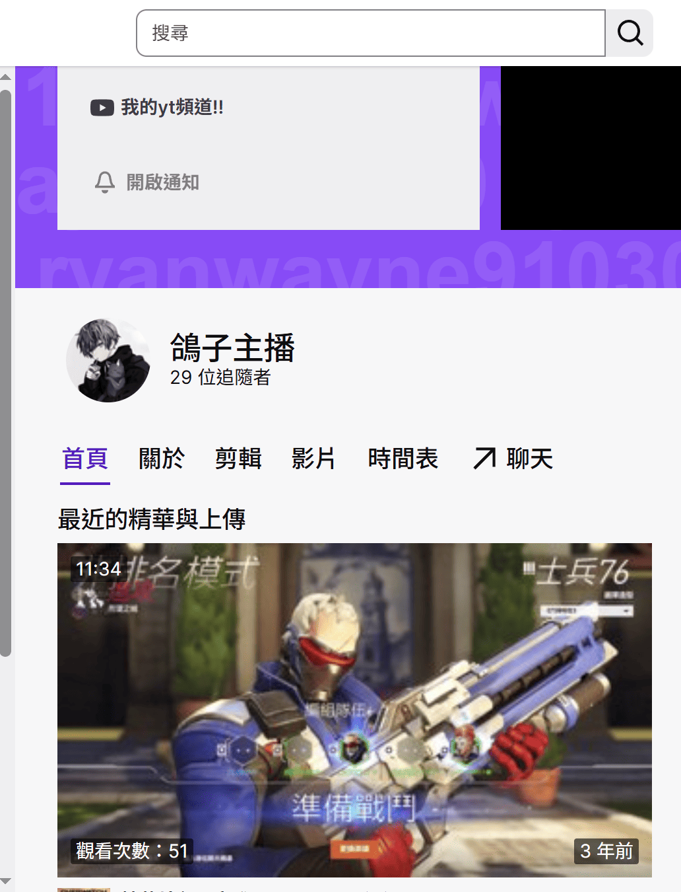
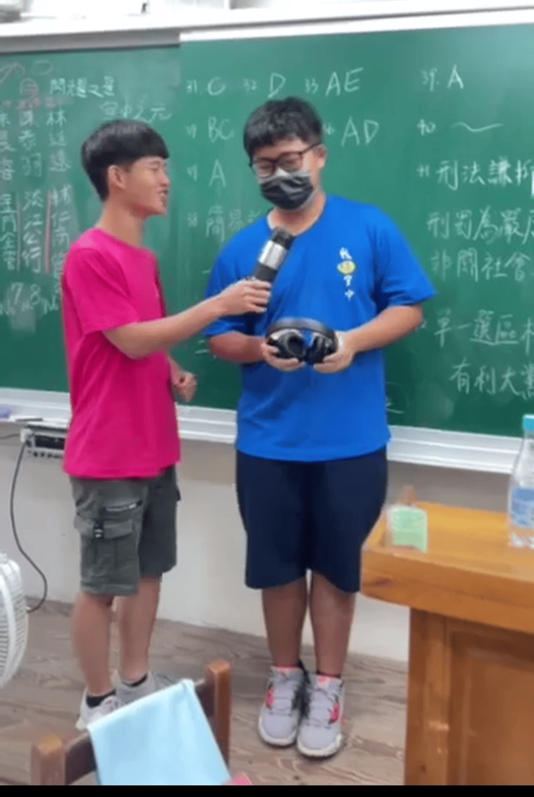

郭子睿 Ryan
連英佑老師，其实我一直是你的粉絲，从網頁設計第一年第一堂課第一個小時开始，我就已经被你深深地吸引。
緋緋狐是超可愛的鬆鬆軟軟粉毛
今年大三
| 科目 | 喜愛程度 | 最愛單元 | 學測分數 |
|---|---|---|---|
| 國文 | 歷史相關 | 10 | |
| 英文 | 英文寫作 | 10 | |
| 自然 | 生物 | ０ | |
| 數學 | ０ | ４ | |
| 社會 | 歷史 | 12 |
在升大學的暑假時，因為知道自己未來會變成吳佩佳的學弟所以我決定把yt第一支影片的製作給了我的學長，再製作的過程中我覺得很開心，也在當時確定自己沒有做錯選擇

在大概疫情時變在twitch嘗試開直播，當作一個好玩的常識，現在想起來那時又菜又愛玩的我依然享受直播的過程呢

那時雖然看起來屁屁的，但現在看到了...卻讓我想起來過去那個超喜歡籃球幾乎每天都會出去打的自己
從第一次看到就暈了...
怎麼剛睡醒也可以這麼可愛ㄚㄚㄚ
誰能拒絕這麼可愛的女生啦
不過還是很好看ㄚㄚㄚㄚ
唯一一張劇照就是美圖阿...
我自己偷偷吸緋緋狐太可愛了啦
大家喜歡哪一張呢?